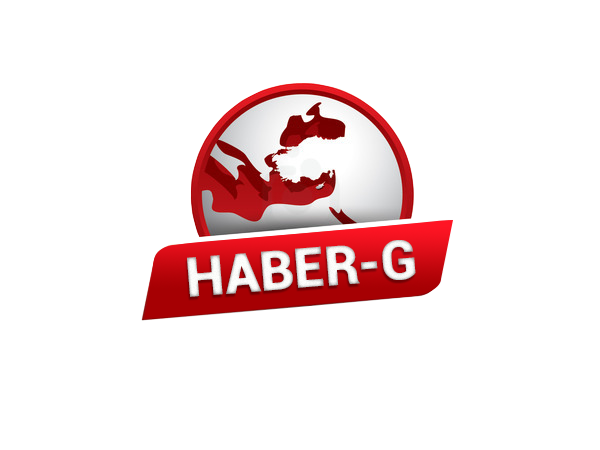

<mat-sidenav-container class="sidenav-container">
  <mat-sidenav #drawer class="sidenav" fixedInViewport
      [attr.role]="(isHandset$ | async) ? 'dialog' : 'navigation'"
      [mode]="(isHandset$ | async) ? 'over' : 'side'"
      [opened]="(isHandset$ | async) === false">
    <mat-toolbar style="padding-left: 0;"> <a href="">   </a></mat-toolbar>

    <mat-nav-list style="margin-top: 50px;">
   <SPAN class="fontMontserrat"> Özgür Medya Platformu </SPAN><hr>
      <a  *ngFor="let item of kategorilerim" class="kategori" mat-list-item href="kategori/{{item.kategoriAdi}}">{{item.kategoriAdi}}( {{item.haberSayi}})</a>
   <hr><br><br>
   <a routerLink="iletisim" ><div class="iletisim">
     <span style="height: 10px;display: block;"></span>
  <span class="text-white  h4 text-center ">İLETİŞİM</span><br>
  </div></a>
<br>
<a routerLink="yazar">
  <div class="iletisim">
    <span style="height: 10px;display: block;"></span>
  <span class="text-white  h4 text-center " #yazi>YAZAR İŞLEMLERİ</span><br>

 </div>  </a>


  <br>
    <!--  <a href="yazar"> </a>-->
    </mat-nav-list>
  </mat-sidenav>
  <mat-sidenav-content>
    <mat-toolbar class="ustmenu">
      <button
        type="button"
        aria-label="Toggle sidenav"
        mat-icon-button
        (click)="drawer.toggle()"
        *ngIf="isHandset$ | async">
        <mat-icon aria-label="Side nav toggle icon">menu</mat-icon>
      </button>
      <span>HABER-GLOBAL</span>

       
      
    </mat-toolbar>
    <!-- Add Content Here -->
    <router-outlet></router-outlet>
  </mat-sidenav-content>
</mat-sidenav-container>
